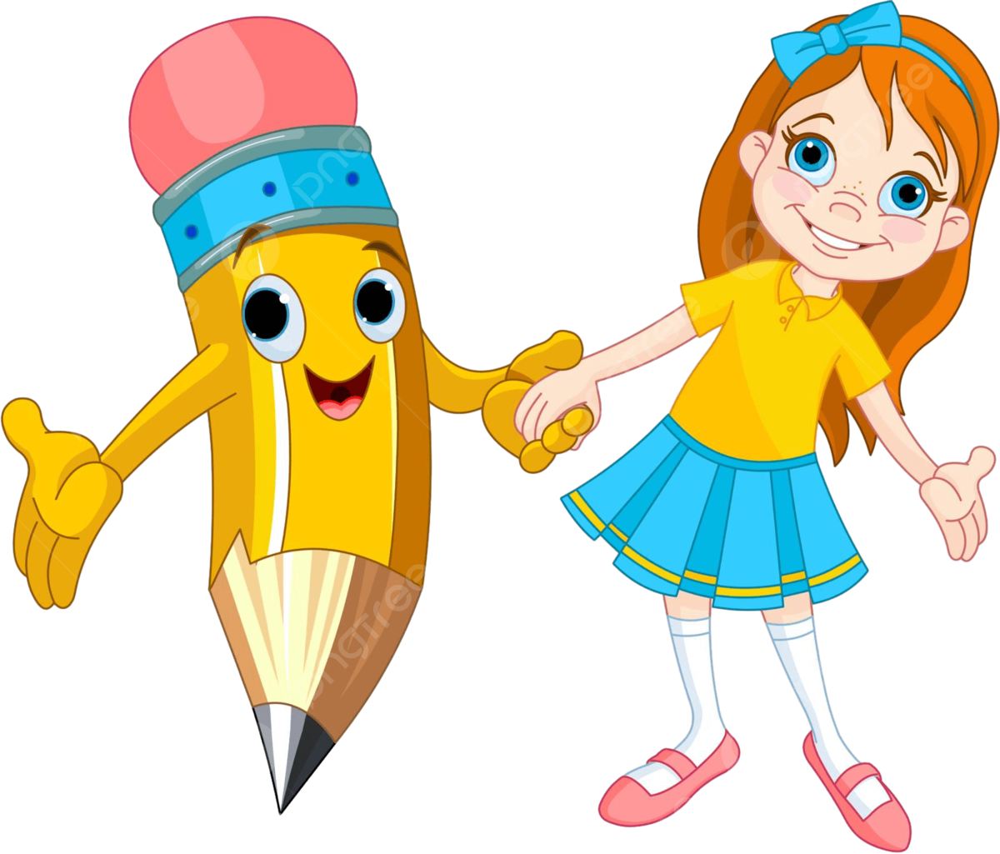

INTRODUCCION
Donde
se proporciona al alumno la informacion
inicial de la actividad y se trata de
motivar y despertar su interes de dos
formas:
1. Mostrandola atractiva y
divertida.
2. Demostrando su utilidad para los intereses del
estudiante.
Bienvenidos a "Explorando el Laberinto de las Drogas", una pagina dedicada a brindar informaci n objetiva y clara sobre los efectos y consecuencias del consumo de drogas. En este viaje, exploraremos los distintos tipos de drogas, sus efectos en el cuerpo y la mente, asi como las repercusiones sociales y familiares que conlleva su uso. Nuestro objetivo es crear conciencia sobre los riesgos asociados con las drogas y promover un estilo de vida saludable y libre de adicciones. Acompa anos en esta travesia hacia el conocimiento y la prevencion!
TAREA

En
la cual se indica a los alumnos el "producto" que deberan
presentar al finalizar la actividad, el cual puede ser una
presentacion multimedia, un sitio web, una exposicion
verbal, o aquello que se considere mas apropiado para el caso.
Al final del trabajo debes realizar una presentaci n en grupo donde expongas sobre los conocimientos adquiridos en esta WebQuest y donde invites a los estudiantes a evitar el uso de estupefacientes.
PROCESO

Son los pasos que se sugieren para llevar a cabo la tarea, la cual se puede dividir en subtareas para el trabajo grupal.
Para elaborar una presentacion efectiva sobre el tema "Explorando el Laberinto de las Drogas: Un Viaje a Traves de sus Efectos y Consecuencias", es importante seguir un proceso estructurado que permita transmitir la informacion de manera clara y concisa. A continuacion, se presenta un esquema basico para la elaboracion de la presentacion:
Introduccion:Comienza la presentacion con una introduccion que capte la atencion del publico. Puedes utilizar estadisticas impactantes, citas relevantes o anecdotas para generar interes en el tema.
Objetivos: Define claramente los objetivos de la presentacion. Que informacion deseas transmitir? Cual es el proposito de explorar el tema de las drogas y sus efectos y consecuencias?
Contenido principal:
Tipos de drogas:Describe los diferentes tipos de drogas, tanto legales como ilegales, y sus efectos en el cuerpo y la mente.
Consecuencias del consumo: Explora las consecuencias fisicas, psicologicas y sociales del consumo de drogas, tanto a corto como a largo plazo.
Factores de riesgo y proteccion: Analiza los factores que pueden influir en el consumo de drogas, asi como las estrategias de prevencion y mitigacion de riesgos.
Impacto en la sociedad: Examina como el consumo de drogas afecta a la sociedad en su conjunto, incluyendo la economia, la salud publica y la seguridad.
Recursos de ayuda: Proporciona informacion sobre donde buscar ayuda para aquellos que luchan contra la adiccion a las drogas y como apoyar a quienes la necesitan.
Conclusiones: Resume los puntos clave de la presentacion y enfatiza la importancia de abordar el tema de las drogas de manera integral y comprensiva.
Recomendaciones y acciones futuras: Sugiere acciones concretas que el publico puede tomar para prevenir el consumo de drogas y apoyar a quienes enfrentan problemas de adiccion.
Preguntas y respuestas: Abre un espacio para que el publico pueda hacer preguntas y compartir sus experiencias o inquietudes sobre el tema.
Recuerda utilizar imagenes, graficos y otros elementos visuales para hacer la presentacion mas atractiva y facil de entender. Ademas, practica tu presentacion varias veces para asegurarte de que fluya de manera natural y que puedas responder a cualquier pregunta que surja.
RECURSOS
Aqui se brinda a los estudiantes una serie de sitios web previamente seleccionados, de modo tal que se evite la perdida de tiempo en la busqueda sin rumbo. Por supuesto! Aqui tienes una seleccion de sitios web previamente seleccionados que los estudiantes pueden visitar para explorar el tema "Explorando el Laberinto de las Drogas: Un Viaje a Traves de sus Efectos y Consecuencias":
Conociendo el Mundo de las Drogas: Un Viaje por la Clasificaci n y sus Impactos - https://open.spotify.com/episode/4OYORbe4xWUJCMlllCq6JWLos Efectos de las Drogas: Tipos y Consecuencias - https://www.buencoco.es/blog/efectos-de-las-drogas
Qu son las drogas, tipos, efectos y consecuencias para la salud - https://www.tuasaude.com/es/efectos-de-las-drogas/
Adicci n a las drogas: causas y consecuencias - https://www.psicologia-online.com/adiccion-a-las-drogas-causas-y-consecuencias-4069.html
EVALUACION
Se trata de hacer una descripcion clara de que y como se evaluara lo aprendido.
Evaluacion sobre "Explorando el Laberinto de las Drogas: Un Viaje a Traves de sus Efectos y Consecuencias"
Cual es el objetivo principal de la presentacion "Explorando el Laberinto de las Drogas"?
A) Promover el consumo de drogas.
B) Informar sobre los diferentes tipos de drogas y sus efectos.
C) Estigmatizar a las personas que consumen drogas.
D) Ninguna de las anteriores.
Que tipo de informacion se espera encontrar en la seccion de "Consecuencias del consumo"?
A) Recomendaciones para el consumo seguro de drogas.
B) Efectos a corto y largo plazo en el cuerpo y la mente.
C) Anecdotas personales sobre el consumo de drogas.
D) Ninguna de las anteriores.
Por que es importante abordar el tema de las drogas de manera integral y comprensiva?
A) Para estigmatizar a las personas que consumen drogas.
B) Para prevenir el consumo de drogas y apoyar a quienes enfrentan problemas de adiccion.
C) Para promover el consumo de drogas recreativas.
D) Ninguna de las anteriores.
Que recomendacion podrias hacer para ayudar a prevenir el consumo de drogas?
A) Estigmatizar a quienes consumen drogas.
B) Proporcionar informacion clara y objetiva sobre los riesgos del consumo de drogas.
C) Ignorar el problema del consumo de drogas.
D) Ninguna de las anteriores.
Que tipo de acciones futuras se podrian sugerir para abordar el problema del consumo de drogas?
A) Implementar programas de prevencion y educacion sobre drogas.
B) Apoyar a personas que enfrentan problemas de adiccion.
C) Promover politicas publicas que aborden las causas subyacentes del consumo de drogas.
D) Todas las anteriores.
CONCLUSION
Se trata de resumir la experiencia, facilitando la reflexion y la puesta en comun sobre el proceso. En conclusion, "Explorando el Laberinto de las Drogas: Un Viaje a Traves de sus Efectos y Consecuencias" nos ha permitido entender la importancia de abordar el tema de las drogas de manera integral y comprensiva. Hemos visto los diferentes tipos de drogas, sus efectos en el cuerpo y la mente, asi como las consecuencias sociales y familiares que conlleva su consumo. Es fundamental promover la prevencion del consumo de drogas, brindar apoyo a quienes enfrentan problemas de adiccion y trabajar en conjunto para crear una sociedad mas saludable y libre de adicciones. Juntos, podemos enfrentar el desafio del consumo de drogas y construir un futuro mejor para todos.
CREDITOS
 Estos sitios web fueron esenciales para la investigacion y la creacion de contenido relacionado con las drogas. Gracias a sus autores por compartir su conocimiento!
Estos sitios web fueron esenciales para la investigacion y la creacion de contenido relacionado con las drogas. Gracias a sus autores por compartir su conocimiento!
1: Conociendo el Mundo de las Drogas: Un Viaje por la Clasificacion y sus Impactos - https://www.bibliotecas.unam.mx/index.php/desarrollo-de-habilidades-informativas/como-hacer-citas-y-referencias-en-formato-apa>
2: Los Efectos de las Drogas: Tipos y Consecuencias - Buencoco.- https://www.buencoco.es/blog/efectos-de-las-drogas>
3:
Que son las drogas, tipos, efectos y consecuencias para la salud. - https://www.tuasaude.com/es/efectos-de-las-drogas/>
4: Adicci n a las drogas: causas y consecuencias - Web de Psicologia. -